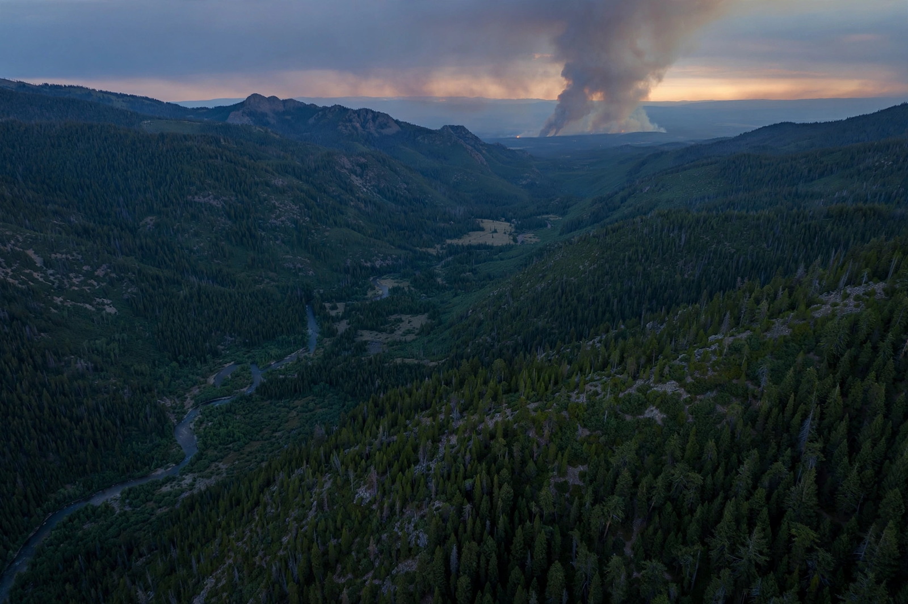

Wildfire

A wildfire is an uncontrolled fire burning in wildland vegetation — forest, grassland, scrub or peat. Wildfires are a natural and necessary process in many ecosystems, whose plants and animals are adapted to fire; they become disasters when they threaten lives, property and air quality, or burn ecosystems outside their natural fire regime.
Fire requires fuel, oxygen and ignition — from lightning or, in most regions most of the time, from people, accidentally or deliberately.
Behaviour and ecology
Fire behaviour is governed by fuel, weather and topography: hot, dry, windy conditions on steep slopes produce the fastest, most dangerous fires, including 'fire weather' extremes that generate their own thunderstorms (pyrocumulonimbus) and long-range ember spotting. Fire-adapted ecosystems such as eucalypt forests, chaparral, savannas and boreal forest depend on periodic burning; decades of fire suppression in some regions have let fuels accumulate, worsening the fires that eventually come.
Indigenous peoples used deliberate burning for millennia to manage landscapes; cultural burning is being revived in Australia and North America as a risk-reduction tool, alongside prescribed burns by agencies.
Trends and impacts
Recent years have seen extraordinary fire seasons — Australia's 2019–20 'Black Summer', Canada's record 2023 season whose smoke blanketed North American cities, and destructive fires in Siberia, the Mediterranean and the western United States. Climate change lengthens fire seasons and dries fuels, while expanding settlement in the wildland–urban interface raises exposure. Wildfire smoke is a major source of Air pollution, and burned slopes invite landslides and floods when rains return.
See also: Natural disaster · Climate change · Air pollution · Deforestation · Forest